Grid — для макета, Flexbox — для компонентов
Дата публикации: 2020-07-07
От автора: мой брат — новичок в области компьютерной инженерии, и в настоящее время он заканчивает свою стажировку по фронт-энд разработке. Он изучил как CSS-Grid, так и Flexbox, но столкнулся с ситуацией, которую я часто вижу. Он не может решить, когда использовать Grid, а когда Flexbox. Например, он использовал CSS-Grid для разметки заголовка веб-сайта и отметил, что процесс не был гладким, когда он работал с grid-column.
Я также начал поиски ресурса, который он мог бы использовать для изучения различий между grid и flexbox, с примерами для обоих, но я не смог его найти. Я решил написать углубленную статью, которая охватывает все на эту тему. Я надеюсь, что вам это также поможет!
Введение
Прежде чем углубляться в концепции и примеры, я хочу убедиться, что вы понимаете основное различие между CSS-Grid и Flexbox. CSS-Grid — это модуль многомерного макета, что означает, что он имеет колонки и ряды. Flexbox может размещать дочерние элементы в виде или столбцов, или строк, но не то и другое одновременно.
Разница между Grid и Flexbox
Позвольте мне прояснить, нет очевидного способа выбрать между сеткой CSS и flexbox. Кроме того, нет правильного или неправильного способа их использования. Эта статья является своего рода руководством, которое рекомендует использовать технику для конкретного случая. Я объясню общую концепцию, а затем перейду к примерам, а остальное зависит от вас.
Практический курс по верстке адаптивного сайта с нуля!
Изучите курс и узнайте, как верстать современные сайты на HTML5 и CSS3
|
2 3 4 5 6 7 8 9 10 11 |
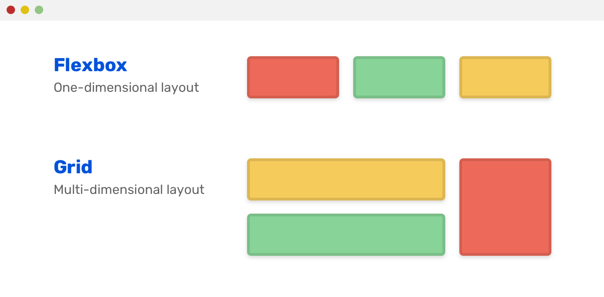
Вы что-то заметили? Flexbox выкладывает встроенный список элементов, а Сетка превращает их в сетку столбцов и строк. Flexbox выравнивает их в ряд. Это может быть столбец, если мы захотим.
|
2 3 4 5 |
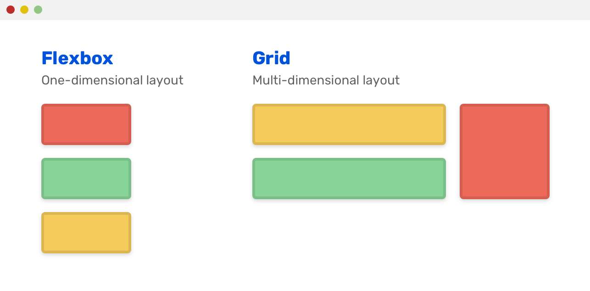
Как решить, что использовать
Выбор между Сеткой CSS и flexbox может быть немного сложным (иногда), особенно если вы новичок в CSS. Вот несколько начальных вопросов, которые я задаю себе, выбирая между ними:
Как отображаются дочерние элементы компонента? Как встроенные или как столбцы и строки?
Как компонент должен работать на экранах разных размеров?
В большинстве случаев, если у просматриваемого компонента все его дочерние элементы отображаются встроенными, то, скорее всего, здесь наиболее подходящим решением является flexbox. Рассмотрим следующий пример:
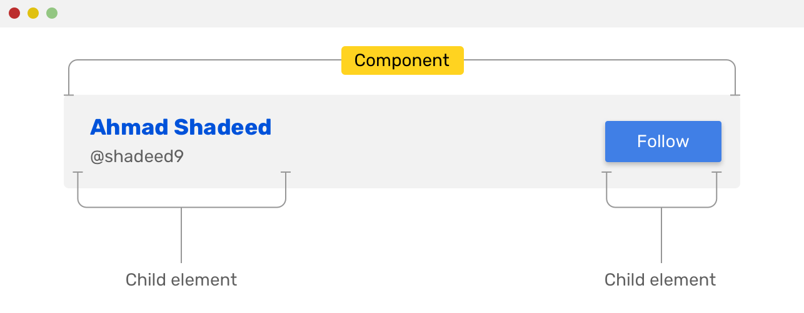
Однако, если вы видите столбцы и строки, то Сетка — это решение для вашего случая.
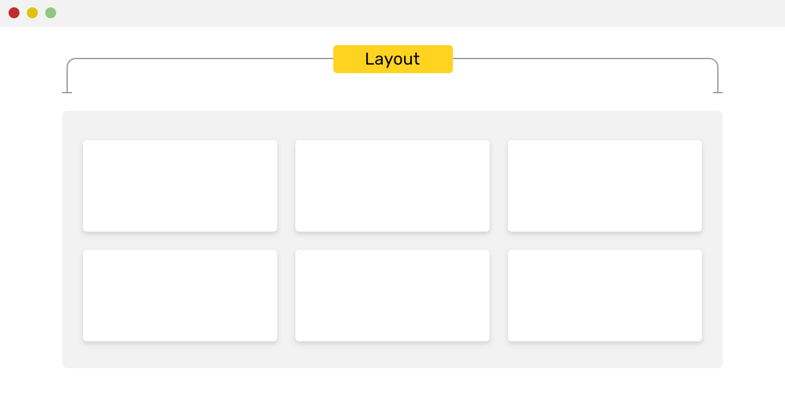
Теперь, когда я объяснил основное различие между ними, давайте перейдем к более конкретным примерам и научимся принимать решения.
Примеры использования
В следующем разделе я подробно расскажу о различных вариантах использования для flexbox и grid.
CSS Grid
Основной контент и боковая панель
Если у вас есть боковая панель и основной контент, CSS-сетка — это идеальное решение для их построения. Рассмотрим следующий макет:
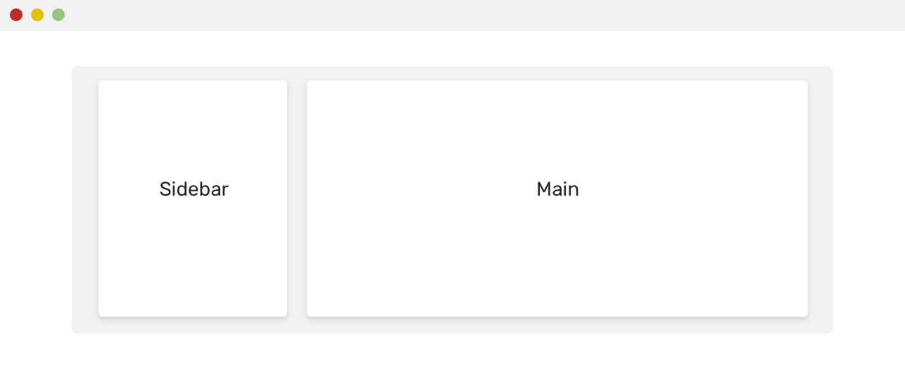
Вот как я мог бы сделать это в CSS:
|
2 3 4 |
|
2 3 4 5 6 7 8 9 10 11 |
Если для элемента <aside> не задано align-self, его высота будет равна основному контенту, независимо от длины содержимого.
Сетка карточек
Как уже говорилось в начале статьи, CSS-Grid самоочевидна по своему названию, поэтому ее использование для разметки сеток карточек является идеальным вариантом.
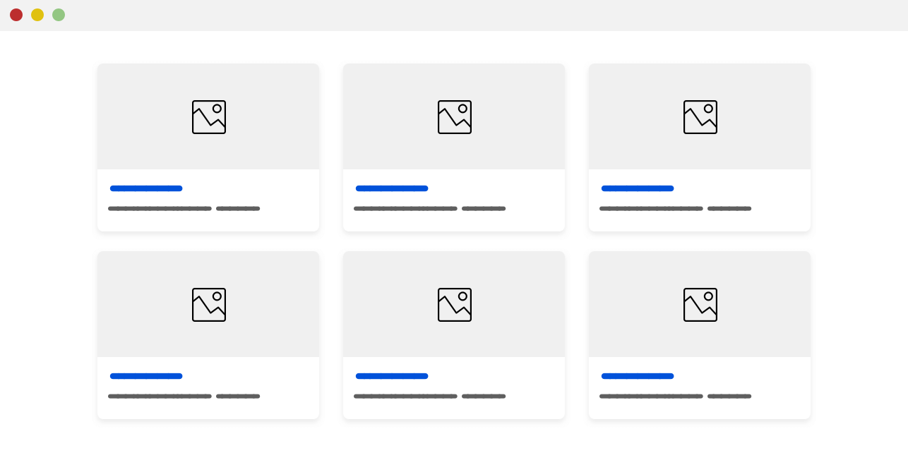
Вот как я мог бы реализовать этот макет:
|
2 3 4 5 |
grid-template-columns: repeat(auto-fit, minmax(200px, 1fr)); |
Ширина столбца будет по крайней мере 200px, и если места недостаточно, он перенесет карточки в новую строку. Стоит отметить, что приведенное выше может вызвать добавление горизонтальной полосы прокрутки, если ширина области просмотра меньше 200px.
Простое решение состоит в том, чтобы добавить определение сетки только тогда, когда ширина области просмотра является достаточной. См. пример ниже:
|
2 3 4 5 6 7 |
grid-template-columns: repeat(auto-fit, minmax(200px, 1fr)); |
Макет раздела
В следующем дизайне мы можем использовать сетку дважды, первый раз — разделить область на две части (боковая панель «Свяжитесь с нами» и форма), а второй — для сетки самой формы.
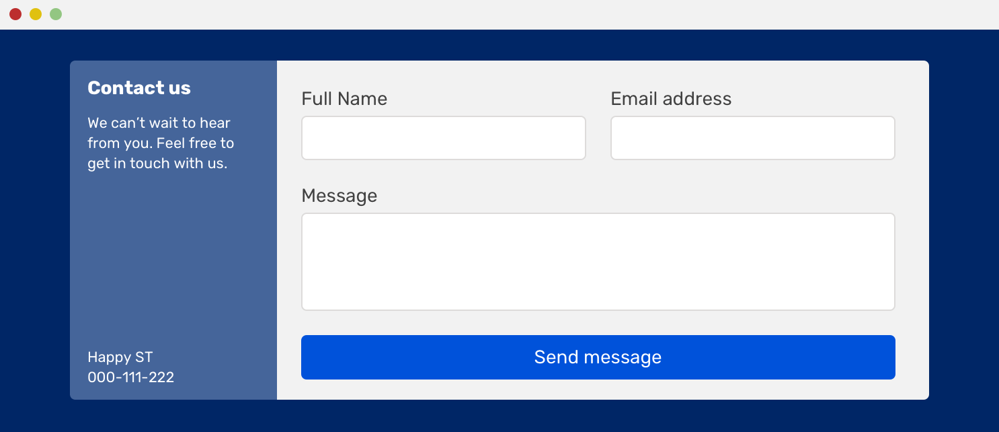
CSS-сетка идеально подходит для этого. Вот как это сделать:
|
2 3 4 5 6 7 8 9 10 11 12 13 14 15 16 17 |
grid-template-columns: 200px 1fr; grid-template-columns: 1fr 1fr; |
CSS Flexbox
Навигация по сайту
В 90% случаев навигация по сайту должна создаваться с помощью CSS flexbox. Самый распространенный шаблон — это логотип слева и меню навигации справа. Это идеально подходит для flexbox.
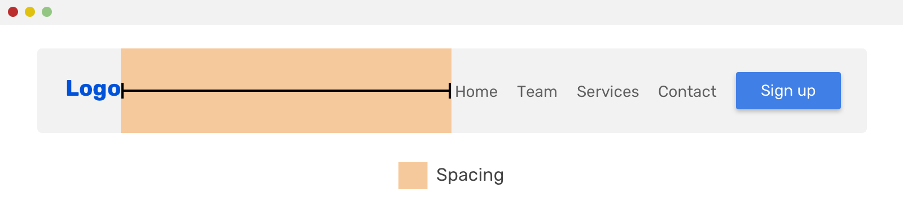
В приведенном выше примере все, что вам нужно установить, это:
|
2 3 4 5 |
Та же концепция может работать и в следующем дизайне.
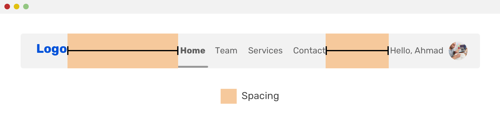
Обратите внимание, что структура меню навигации немного отличается, но интервал между элементами все еще соблюдается с помощью свойства justify-content.
Список действий
Когда вы слышите про список, первое, о чем вы можете подумать — это вертикальный список. Тем не менее, список может отображаться в строке, я просто хотел убедиться, что это понятно.
Пример списка действий — это то, что мы можем видеть на Facebook или Twitter. Список действий состоит из кнопок действий, которые может выполнять пользователь. Смотрите скриншоты ниже:
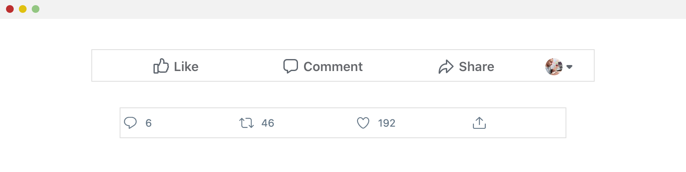
Как видите, элементы отображаются рядом друг с другом, и они расположены горизонтально. Flexbox идеально подходит для этого! Это одно из основных применений.
|
2 3 4 5 6 7 |
flex: 1; /* расширяем элементы, чтобы они равномерно распределялись в доступном пространстве */ |
Другой вариант этого — модальная кнопка действия или модальный заголовок.
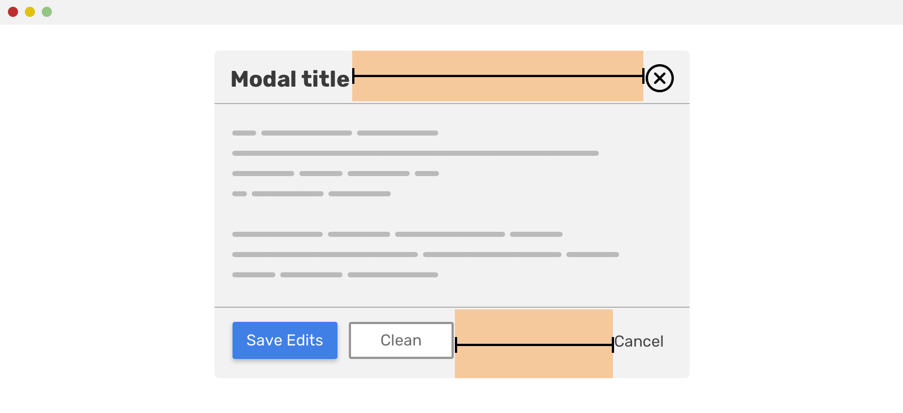
И модальный заголовка и модальный футер имеют дочерние элементы, которые отображаются встроенными. Расстояние между ними задано так, как показано ниже. Для модального заголовка это выглядит так:
|
2 3 4 |
Для футера, это немного по-другому. Действие «Отмена» использует автоматическое поле для сдвига вправо.
|
2 3 |
Имя .cancel__action может быть не идеальным, но я не хочу сейчас вдаваться в соглашения об именах CSS.
Элементы формы
Комбинация поля ввода с кнопкой рядом с ним — идеальный вариант использования Flexbox. Посмотрите на рисунок ниже:
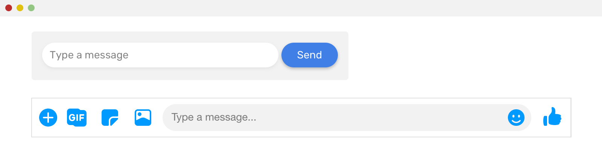
В первой форме элемент ввода занимает все доступное пространство, что делает его динамическим. То же самое относится ко второй форме (Facebook messenger), текстовое поле занимает все доступное место. Давайте внимательнее посмотрим на него.
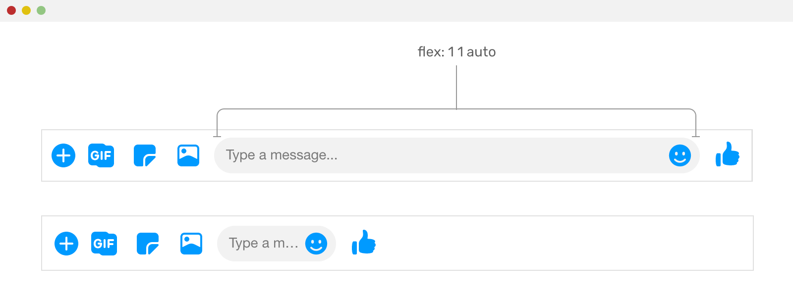
Обратите внимание, что без использования для текстового поля flex: 1 1 auto оно не будет расширяться и заполнять оставшееся пространство.
Темы и комментарии
Другим распространенным вариантом использования flexbox являются темы комментариев. Рассмотрим следующий пример.
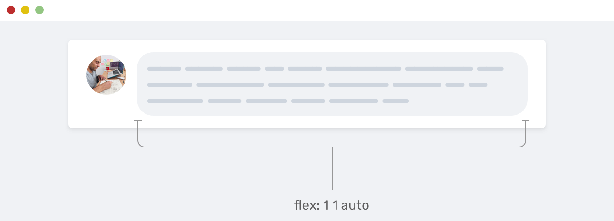
У нас есть фотография пользователя и сам комментарий. Комментарий занимает оставшееся место в родительском элементе. Это идеальное место для использования flexbox.
Компоненты карточки
Компонент карточки имеет много вариаций, но наиболее распространенный дизайн — это что-то вроде макета ниже.
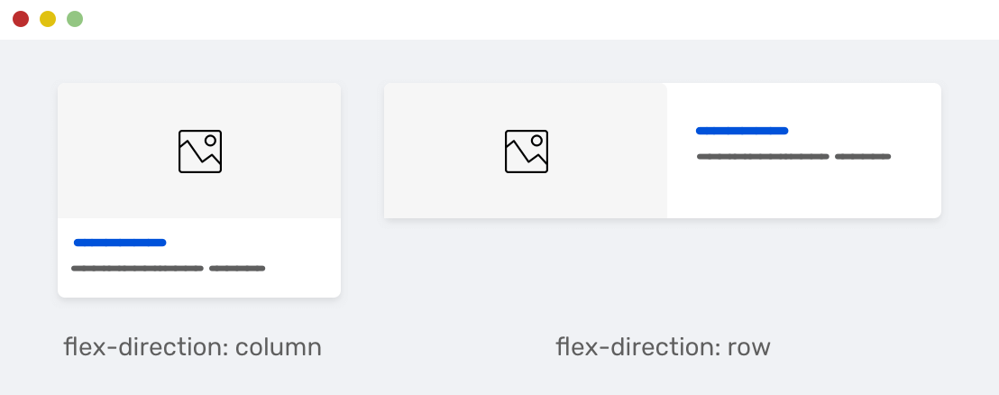
Слева дочерние элементы карты расположены друг над другом, потому что направление flex-контейнера — column. А справа — наоборот. Используемое направление — row, и имейте в виду, что row — это направление по умолчанию для flexbox.
|
2 3 4 5 6 7 8 9 10 |
Еще одна распространенная разновидность карточки — иконка с текстовой меткой под ней. Это может быть кнопка, ссылка или просто декоративный элемент. Рассмотрим следующий макет:
Практический курс по верстке адаптивного сайта с нуля!
Изучите курс и узнайте, как верстать современные сайты на HTML5 и CSS3
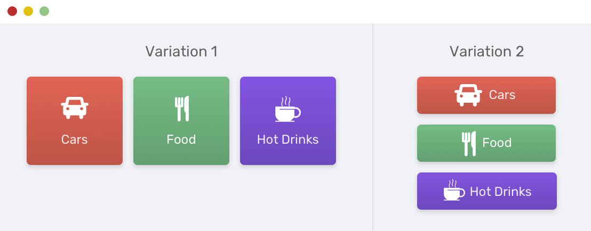
Обратите внимание, как иконка и текстовая метка центрированы по горизонтали и вертикали. Благодаря flexbox это легко сделать.
|
2 3 4 5 |
Встроенный стиль применяется по умолчанию, нам просто нужно удалить flex-direction: column и оставить значение по умолчанию (row).
Вкладки / нижние меню
Когда дело доходит до элементов, которые занимают всю ширину экрана и содержат элементы, которые должны занимать все доступное пространство, тогда flexbox является идеальным инструментом.
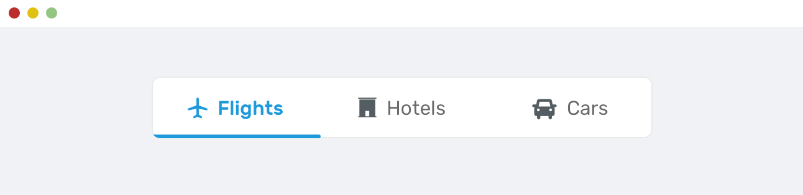
В приведенном выше примере каждый элемент должен заполнить доступное пространство, и они должны быть равны по ширине. Установив для свойства display контейнера flex, мы можем легко это сделать.
|
2 3 |
Этот метод используется в среде React Native для создания панели вкладок для мобильных приложений. Вот пример кода, который делает то же самое, что и в React Native. Код заимствован с этого ресурса.
|
2 3 4 5 6 7 8 9 10 11 12 |
import { View } from 'react-native'; |
Список функций
Что мне больше всего нравится во flexbox, так это возможность менять направление элементов. Направление flexbox по умолчанию — row, но мы можем изменить его, как показано ниже.
|
2 3 |
В макете ниже обратите внимание, как чётный элемент переворачивается, это делается с помощью техники, описанной выше. Что очень полезно.
Центрирование содержимого раздела
Давайте рассмотрим ситуацию, когда у нас есть hero-раздел, и контент должен быть центрирован по горизонтали и вертикали. Горизонтальное центрирование выполнить просто, поскольку это может быть сделано с помощью выравниванием текста.
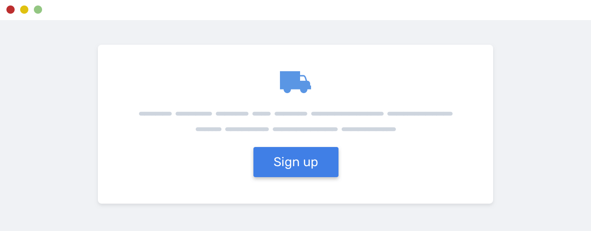
|
2 3 |
Но как использовать flexbox для центрирования элементов по вертикали? Вот что нам нужно.
|
2 3 4 5 6 7 |
align-items: center; /* centers items horizontally */ |
Сочетание CSS Grid и Flexbox
Каждый модуль макета не только имеет свои варианты использования, но мы можем использовать оба из них. Когда я думаю об их объединении, первый вариант использования, который я мне приходит на ум, это список карточек. Сетка используется для размещения карточек, а flexbox — для самого компонента карточки.
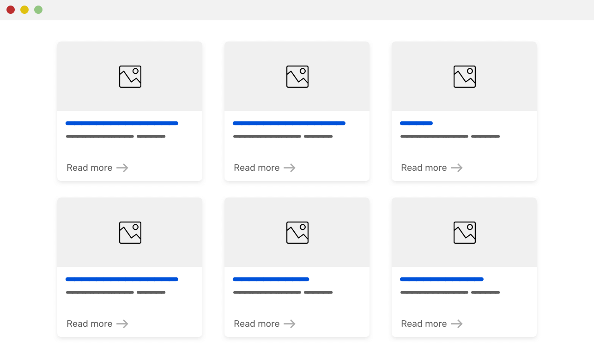
Вот требования к макету:
Высота карточек для каждого ряда должна быть равна
Ссылка read more должна быть расположена в конце карточки, независимо от ее высоты.
Сетка должна использовать функцию minmax()
|
2 3 4 5 6 7 8 9 10 |
<img src="sunrise.jpg" alt=""> |
|
2 3 4 5 6 7 8 9 10 11 12 13 14 15 16 17 18 19 20 21 22 |
grid-template-columns: repeat(auto-fill, minmax(200px, 1fr)); |
Позвольте мне объяснить CSS выше.
Делаем карточку контейнером flexbox.
Направление — column, что означает, что элементы карточки уложены один под другим.
Позволяем содержимому карточки расширяться и заполнять доступное пространство.
Делаем содержимое карточки контейнером flexbox.
Наконец, используем margin-top: auto, чтобы сместить ссылку вниз. Она будет размещаться в конце независимо от высоты карточки.
Как видите, объединить CSS-сетки и flexbox не сложно. Эти два инструмента могут дать нам много способов реализации макетов в Интернете. Давайте использовать их правильно и объединять их только при необходимости, как указано выше.
Резервный вариант и поддержка старых браузеров
Использование CSS @supports
Пару месяцев назад я получил твит, в котором говорилось, что мой сайт не работает в IE11. После проверки я заметил очень странное поведение. Весь контент сайта свернут в верхнюю левую область. Мой сайт не пригоден для использования!
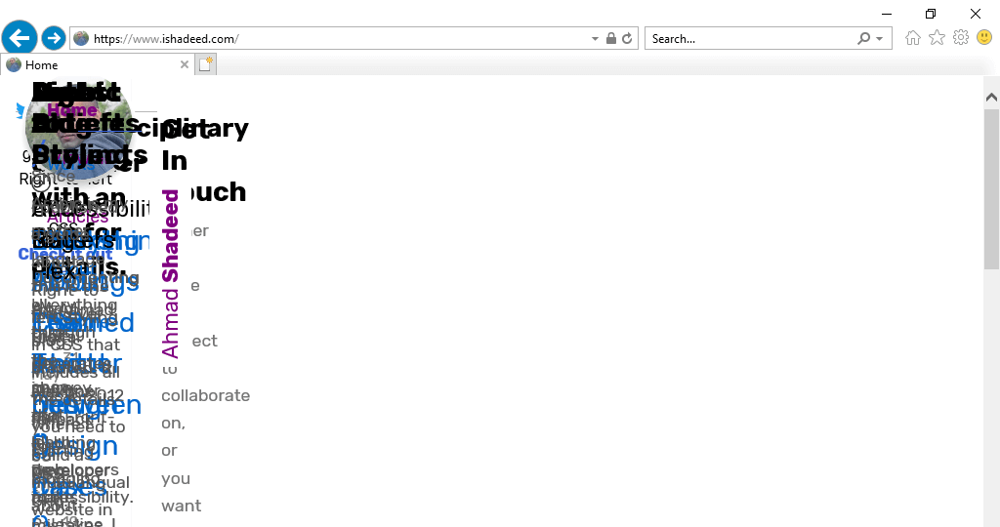
Да, это мой сайт — интерфейс сайта для разработчиков на IE11. Сначала я был смущен, почему это происходит? Я вспомнил, что CSS-сетка поддерживается в IE11, но это старая версия, выпущенная Microsoft. Решение очень простое — использовать CSS-сетку только для новых браузеров через @supports.
|
2 3 4 5 |
Позвольте мне объяснить это. Я использовал grid-area, потому что оно поддерживается только в новой спецификации сетки CSS, с марта 2017 года по сегодняшний день. Поскольку IE не поддерживает запрос @supports, все правило будет игнорироваться. В результате новая CSS-сетка будет использоваться только для поддерживающих браузеров.
Использование Flexbox в качестве резервного варианта для CSS-Сетки
Если flexbox не подходит для отображения сетки элементов, это не значит, что он не подходит для отката. Вы можете использовать flexbox в качестве резервного варианта для CSS-сетки для не поддерживающих браузеров. Я разработал инструмент, который делает именно это.
Резервный код выше работает следующим образом:
Добавляем к элементу оболочки display: flex и flex-wrap: wrap.
Проверяем, поддерживается ли CSS-сетка, если да, то вместо этого будет использоваться display: grid.
Используя селектор > *, мы можем выбрать прямые дочерние элементы контейнера. Выбрав их, мы можем добавить определенную ширину или размер к каждому.
Конечно, между ними необходимо поле, оно будет заменено grid-gap в случае поддержки CSS-сетки.
Вот пример того, как использовать миксин Sass.
|
2 3 4 |
Когда не стоит использовать ни Сетку, ни Flexbox
Когда я делал обзор кода для моего брата, я заметил несколько неправильных вариантов использования CSS-сетки или flexbox и подумал, что это может быть полезно, если я выделю некоторые из них.
Использование CSS Grid для заголовка сайта
Одним из мотивов для написания этой статьи была эта ошибка. Я заметил, что мой брат использует CSS-сетку для реализации заголовка сайта.
Он упомянул такие вещи, как «это было сложно, CSS сетка сложна и т. д.». В результате использования неправильного метода верстки он пришел к выводу, что CSS-сетка сложна. Это не так, и все его заблуждение произошло из-за того, что он использовал ее для неподходящих вещей. Рассмотрим следующий пример, который я нашел.
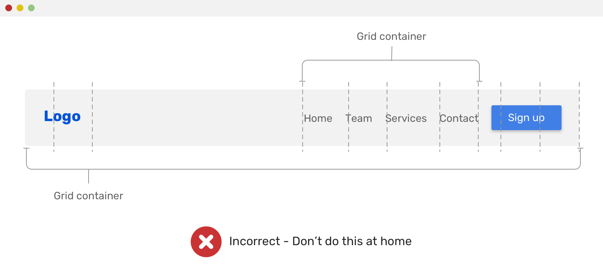
|
2 3 4 5 6 7 8 9 |
grid-template-columns: 1fr 1fr 1fr 1fr 1fr 1fr; |
CSS-сетка использовалась дважды, первый раз для всего заголовка, а второй — для меню навигации. Он использовал grid-column для точной настройки расстояния между элементами и других странных вещей, которые я не могу вспомнить, но вы поняли идею!
Использование CSS Grid для вкладок
Еще одно неправильное использование CSS-сетки — это применение к компоненту вкладок. Рассмотрим следующий макет.
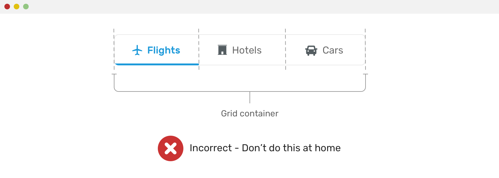
Неправильный код CSS выглядит так:
|
2 3 4 |
Из приведенного выше кода видно, что разработчик предположил, что количество вкладок равно трем. В результате он использовали 1fr 1fr 1fr для раскладки колонок. Это может легко сломаться, если количество столбцов изменилось.
Ненужное использование Flexbox или Grid
Помните, что старый метод макета может быть идеальным для вашего случая. Ненужное использование flexbox или сетки может со временем усложнить ваш CSS. Я не имею в виду, что они сложны, но гораздо лучше использовать их правильно и в правильном контексте, как объяснено в примерах этой статьи.
Например, у вас есть следующий hero-раздел с необходимостью горизонтально центрировать все содержимое.
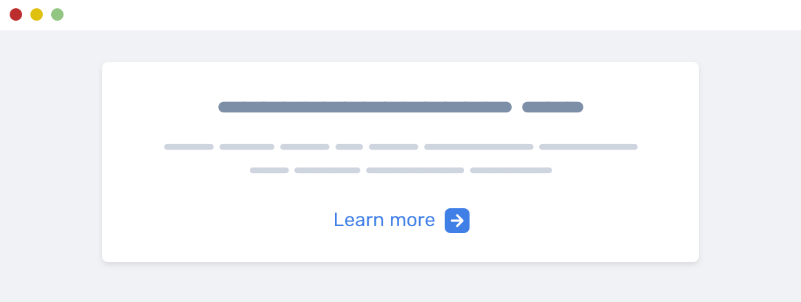
Это можно сделать с помощью text-align: center. Зачем использовать flexbox, когда есть более простое решение?
Заключение
Фу, это было много всего о различиях между использованием CSS Grid и Flexbox. Эта тема была задумана долгое время, и я рад, что мне выпал шанс написать об этом.
Автор: Ahmad Shadeed
Источник: //ishadeed.com
Редакция: Команда webformyself.
�